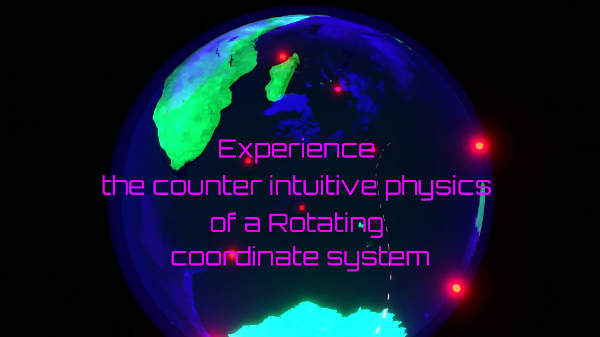

YouTube
Relativistic phenomena from first person perspective
A first-person visualization of special relativistic phenomena.
Open on YouTube →Scientific visualization channel
Visualizing physics through videos, browser demos, shaders, and small games. The focus is on making abstract ideas easier to see: relativity, quantum mechanics, electrodynamics, differential geometry.
Featured
A first-person visualization of special relativistic phenomena.
Open on YouTube →
A Bohmian / pilot-wave visualization of the double-slit experiment.
Open on YouTube →
The first part of the relativistic rotation series, beginning from the Ehrenfest paradox.
Open on YouTube →
An immersive VR version for experiencing Coriolis and centrifugal forces directly.
Open VR version →An interactive desktop and VR demo for exploring relativistic observation, Lorentz contraction, and aberration. Note: It is meant to be experienced in a VR headset for the full effect.
Open demo →